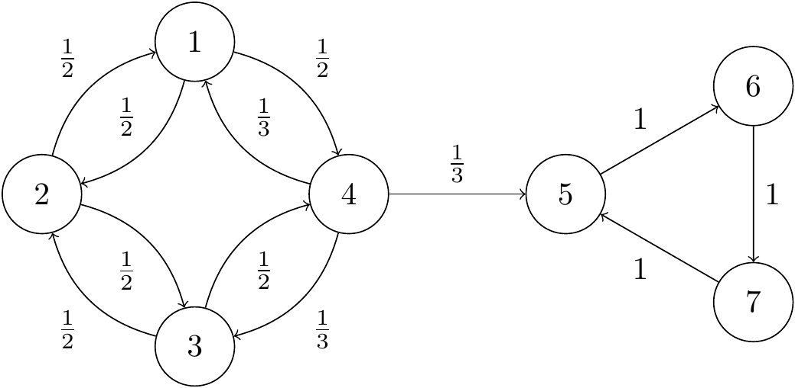

Section 9 Recurrence and transience
- Definitions of recurrence and transience
- Recurrence and transience as class properties
- Positive and null recurrence
9.1 Recurrence and transience of states
When thinking about the long-run behaviour of Markov chains, we are interested two different types of states:
- Recurrent states, which we always keep returning to again and again;
- Transient states, which we may return to a few times, but eventually we will leave and never come back.
The official definition is as follows; we will show that other properties follow from this.
Definition 9.1 Let \((X_n)\) be a Markov chain on a state space \(\mathcal S\). For \(i \in \mathcal S\), let \(m_i\) be the return probability \[ m_i = \mathbb P(X_n = i \text{ for some $n \geq 1$} \mid X_0 = i) . \] If \(m_i = 1\), we say that state \(i\) is recurrent; if \(m_i < 1\), we say that state \(i\) is transient.
Theorem 9.1 Consider a Markov chain with transition matrix \(\mathsf P\) and state space \(\mathcal S\).
- If the state \(i\) is recurrent, then \(\sum_{n=1}^\infty p_{ii}(n) = \infty\), and we return to state \(i\) infinitely many times with probability \(1\).
- If the state \(i\) is transient, then \(\sum_{n=1}^\infty p_{ii}(n) < \infty\), and we return to state \(i\) infinitely many times with probability \(0\).
Here \(\sum_{n=1}^\infty p_{ii}^{(n)}\) is the expected number of returns to \(i\) starting from \(i\).
We’ll come to the proof in a moment, but first some examples.
Example 9.1 Consider the simple random walk. In the last section we saw that \(m_i = 1\) for the simple symmetric random walk with \(p = \frac12\), so the simple symmetric random walk is recurrent. But for \(p \neq \frac12\), we have \(m_i < 1\), so all the other simple random walks are transient.
Example 9.2 We saw this example in Lecture 7:

For states 5, 6 and 7, it’s clear that the return probability is 1, since the Markov chain cycles around the triangle, so these states are recurrent.
States 1, 2, 3 and 4 are recurrent. In a moment we’ll see a very quick way to show this, but in the meantime we can prove it directly by getting our hands dirty.
From state 4, we might go straight to state 5, in which case we can’t come back, so \(m_4 \leq 1 - p_{45} = \frac23\), and state 4 is transient. Similarly, \(m_1 \leq 1 - p_{14}p_{45} = \frac56\), because if we move from 1 to 4 to 5, we definitely won’t come back to 1, so state 1 is transient. By the similar arguments, \(m_3 \leq 1 - p_{34}p_{45} = \frac56\), and \(m_2 \leq 1 - p_{21}p_{14}p_{45} = \frac{11}{12}\), so these states are both transient too.
Notice that the communicating class \(\{1,2,3,4\}\) is all transient, while the communicating class \(\{5,6,7\}\) is all recurrent. We shall return to this point shortly. But first, we’ve put off the proof for too long.
Proof (Proof of Theorem 9.1). Suppose state \(i\) is recurrent, so the probability we return to \(i\) is \(m_i = 1\). By the Markov property, we it’s as if we restart the chain from \(i\), so the probability we return to \(i\) is again still \(m_i = 1\). Repeating this, we visit infinitely often with probability \(1\). In particular, the if number of visits to \(i\) starting from \(i\) is infinite, then its expectation is infinite too, and this expectation is \(\sum_{n=1}^\infty p_{ii}(n) = \infty\).
Suppose state \(i\) is transient, so the probability we return to \(i\) is \(m_i < 1\). Then the probability we return to \(i\) exactly \(r\) times before never coming back is \[ \mathbb P \big((\text{number of returns to $i$}) = r\big) = m_i^r(1-m_i) , \] since we must return on the first \(r\) occasions, but then fail to return any more. This is a geometric distribution \(\text{Geom}(1-m_i)\) (the version with support \(\{0,1,2,\dots\}\)). Since the expectation of a \(\text{Geom}(p)\) random variable is \((1 - p)/p\), the expected number of returns is \[ \mathbb E(\text{number of returns to $i$}) = \sum_{n=1}^\infty p_{ii}(n) = \frac{1 - (1 - m_i)}{1 - m_i} = \frac{m_i}{1 - m_i} . \] This is finite, since \(m_i <1\). Since the expected number of returns is finite, the probability we return infinitely many times must be \(0\).
9.2 Recurrence and transience of classes
We could find whether each state is transient or recurrent by calculating (or bounding) all the return probabilities \(m_i\), using the methods in the previous section. But the following two theorems will give some highly convenient short-cuts.
Theorem 9.2 Within a communicating class, either every state is transient or every state is recurrent.
Formally: Let \(i, j \in \mathcal S\) be such that \(i \leftrightarrow j\). If \(i\) is recurrent, then \(j\) is recurrent also; while if \(i\) is transient, then \(j\) transient also.
For this reason, we can refer to a communicating class as a “recurrent class” or a “transient class”. If a Markov chain is irreducible, we can refer to it as a “recurrent Markov chain” or a “transient Markov chain”.
Proof. First part. Suppose \(i \leftrightarrow j\) and \(i\) is recurrent. Then, for some \(m\), \(n\) we have \(p_{ij}^{(n)}\), \(p_{ji}^{(m)} > 0\). Then, by the Chapman–Kolmogorov equations, \[ \sum_{r=1}^\infty p_{jj}^{(n+m+r)} \geq \sum_{r=1}^\infty p_{ji}^{(m)}p_{ii}^{(r)} p_{ij}^{(n)} = p_{ji}^{(m)} \left(\sum_{r=1}^\infty p_{ii}^{(r)} \right) p_{ij}^{(n)} . \] If \(i\) is recurrent, then \(\sum_r p_{ii}^{(r)} = \infty\). Then from the above equation, we also have \(\sum_r p_{jj}^{(n+m+r)} = \infty\), meaning \(\sum_s p_{jj}^{(s)} = \infty\), and \(j\) is recurrent.
Second part. Suppose \(i\) is transient. Then \(j\) cannot be recurrent, because the previous argument with \(i\) and \(j\) swapped over would force \(i\) to in fact be recurrent also. So \(j\) must be transient.
Theorem 9.3
- Every non-closed communicating class is transient.
- Every finite closed communicating class is recurrent.
This theorem completely classifies the transience and recurrence of classes, with rare exception of infinite closed classes, which can require further examination.
Proof. First part. Suppose \(i\) is in a non-closed communicating class, so for some \(j\) we have \(i \to j\), meaning \(p_{ij}^{(n)} > 0\) for some \(n\), but \(j \not\to i\), meaning that once we reach \(j\) we cannot return to \(i\). We need to show that \(i\) is transient.
The probability we return to \(i\) after time \(n\) is \[\begin{align*} \mathbb P(\text{return} & \text{ to } i \text{ after time $n$} \mid X_0 = i) \\ &= p_{ij}^{(n)}\,\mathbb P(\text{return to $i$ after time $n$} \mid X_n = j, X_0 = i) \\ &\qquad {}+ \big(1 - p_{ij}^{(n)}\big)\,\mathbb P(\text{return to $i$ after time $n$} \mid X_n \neq j, X_0 = i) \\ &\leq \mathbb P(\text{return to $i$ after time $n$} \mid X_n = j, X_0 = i) + \big(1 - p_{ij}^{(n)}\big) \\ &\leq 0 + \big(1 - p_{ij}^{(n)}\big) \\ &< 1, \end{align*}\] since we can’t get from \(j\) to \(i\), and since \(p_{ij}^{(n)} > 0\). If \(i\) were recurrent we would certainly return infinitely often, and in particular certainly return after time \(n\). So \(i\) must be transient instead.
Second part. Suppose the class \(C\) is finite and closed. Then for some \(i \in C\), the probability that we return to \(i\) infinitely many times must be strictly positive, as we are going to stay in finitely many states of \(C\) for infinitely many time steps. Then that state \(i\) is not transient, so it must be recurrent, meaning the whole class is recurrent.
Going back to the earlier example, we see that the class \(\{5,6,7\}\) is closed and finite, and therefore recurrent, while class \(\{1,2,3,4\}\) is not closed and therefore transient. This is much less effort than the previous method!
9.3 Positive and null recurrence
It can be useful to further divide recurrent classes, where the return probability \(m_i = 1\), by whether the expected return time \(\mu_i\) is finite or not.
Definition 9.2 Let \((X_n)\) be a Markov chain on a state space \(\mathcal S\). Let \(i \in \mathcal S\) be a recurrent state, and let \(\mu_i\) be the expected return time. If \(\mu_i < \infty\), we say that state \(i\) is positive recurrent; if \(\mu_i = \infty\), we say that state \(i\) is null recurrent.
The following facts are not difficult to prove, in a similar way to the previous results:
- In a recurrent class, either all states are positive recurrent or all states are null recurrent.
- All finite closed classes are positive recurrent.
The first result means we can refer to a “positive recurrent class” or a “null recurrent class”, and an irreducible Markov chain can be a “positive recurrent Markov chain” or a “null recurrent Markov chain”.
Putting everything so far together:
- non-closed classes are transient;
- finite closed classes are positive recurrent;
- infinite closed classes can be positive recurrent, null recurrent, or transient.
We know that the simple symmetric random walk is recurrent. We also saw in [the last section]((#S08-return-rw) that \(\mu_i = \infty\), so it is null recurrent.
We can also consider the simple symmetric random walk in \(d\)-dimensions, on \(\mathbb Z^d\). At each step we pick one of the coordinates and increase or decrease it by one; each of the \(2d\) possibilities having probability \(1/(2d)\). We have seen that for \(d=1\) this is null recurrent. A famous result by the Hungarian mathematician George Pólya from 1921 states the simple symmetric random walk is null recurrent for \(d = 1\) and \(d = 2\), but is transient for \(d \geq 3\). (Perhaps this is why cars often crash into each other, but aeroplanes very rarely do?)
9.4 Strong Markov property
This subsection is optional and nonexaminable.
There was a cheat somewhere in this section – did you notice it? The last two times I lectured this course, I just hoped no one would notice – and no one did. Still, it’s a bit naughty, so in this optional and nonexaminable section, I’ll come clean.
The Markov property says that, if at some fixed time \(n\) we have \(X_n = i\), then the Markov chain from that point on is just like starting all over again from the state \(i\). When we applied this in the proof of Theorem 9.1, we were using as \(n\) the first return to state \(i\). But that’s not a fixed time – it’s a random time. Have we messed up?
Actually we’re fine. The reason is that the first return to \(i\) isn’t just any old random time, it’s a “stopping time”, and the Markov property applies to stopping times too.
A stopping time is a random time where “you know when you get there”.
Definition 9.3 Let \((X_n)\) be a stochastic process in discrete time, and let \(T\) be a random time. Then \(T\) is a stopping time if for all \(n\) the event \(\{T = n\}\) is determined by the random variables \(X_0, X_1, \dots, X_n\).
So, for example:
- “The first visit to state \(i\)” is stopping time, because as soon as we return, we know the value of \(T\).
- “Three time-steps after the second visit to \(j\)” is a stopping time, because after our second visit we count on three more steps and have \(T\).
- “The time-step before the first visit to \(i\)” is not a stopping time, because we need to go one step further on to know whether or not we had just been at time \(T\).
- “The final visit to \(j\)” is not a stopping time, because at the time of the visit we don’t yet know whether we’ll come back again or not.
There are lots of places in probability theory and finance when something that is true about a fixed time is also true about a random stopping time. When we use the Markov property with a stopping time, we call it the “strong Markov property”.
Theorem 9.4 (Strong Markov property) Let \((X_n)\) be a Markov chain on a state space \(\mathcal S\), and let \(T\) be a stopping time that is finite with probability 1. Then all states \(x_0, \dots,x_{T-1}, i, j \in \mathcal S\) we have \[ \mathbb P(X_{T+1}=j \mid X_T=i, X_{T-1} = x_{T-1} \dots, X_0 = x_0) = \mathbb p_{ij} . \]
Proof. We have \[\begin{align*} &\mathbb P(X_{T+1}={}x_j \mid X_T=i, X_{T-1} = x_{T-1} \dots, X_0 = x_0) \\ &\qquad{}= \sum_{n=0}^\infty \mathbb P(T = n) \mathbb P(X_{n+1}=j \mid X_n=i, X_{n-1} = x_{n-1} \dots, X_0 = x_0, T = n) \\ &\qquad{}= \sum_{n=0}^\infty \mathbb P(T = n) \mathbb P(X_{n+1}=j \mid X_n=i, X_{n-1} = x_{n-1} \dots, X_0 = x_0) \\ &\qquad{}= \sum_{n=0}^\infty \mathbb P(T = n) \mathbb P(X_{n+1}=j \mid X_n=i) \\ &\qquad{}= \sum_{n=0}^\infty \mathbb P(T = n) p_{ij}\\ &\qquad{}= p_{ij} \sum_{n=0}^\infty \mathbb P(T = n) \\ &\qquad{}= p_{ij} , \end{align*}\] as desired. The second line was by conditioning on the value of \(T\); in the third line we deleted the superfluous conditioning \(T = n\), because \(T\) is a stopping time, so the event \(T = n\) is entirely decided by \(X_n, X_{n-1}, \dots, X_0\); the fourth line used the (usual non-strong) Markov property; the fifth line is just the definition of \(p_{ij}\); the sixth line took \(p_{ij}\) out of the sum; and the seventh line is because \(T\) is finite with probability 1, so \(\mathbb P(T = n)\) sums to 1.
9.5 A useful lemma
This subsection is optional and nonexaminable.
The following lemma will be used in some later optional and nonexaminable proofs.
Lemma 9.1 Let \((X_n)\) be an irreducible and recurrent Markov chain. Then for any initial distribution and any state \(j\), we will certainly hit \(j\), so the hitting time \(H_j\) is finite with probability 1.
Proof. It suffices to prove the lemma when the initial distribution is “start at \(i\)”. (We can repeat for all \(i\), then build any initial distribution from a weighted sum of “start at \(i\)”s.)
Since the chain is irreducible, we know we can get from \(i\) to \(j\), so pick \(m\) with \(p_{ji}(m) > 0\). Since the chain is recurrent, we know the return probability from \(j\) to \(j\) is 1, and we return infinitely many times with probability 1. We just need to glue these two facts together.
We have \[\begin{align*} 1 &= \mathbb P(X_n = j \text{ for infinitely many $n$} \mid X_0 = j) \\ &= \mathbb P(X_n = j \text{ for some $n > m$} \mid X_0 = j) \\ &= \sum_k \mathbb P(X_m = k \mid X_0 = j) \,\mathbb P(X_n = j \text{ for some $n > m$} \mid X_m = k, X_0 = j) \\ &= \sum_k p_{jk}(m) \,\mathbb P(H_j < \infty \mid X_0 = k) , \end{align*}\] where the last line used the Markov property to treat the chain as starting over again when it reaches some state \(k\) at time \(m\). Note that \(\sum_k p_{jk}(m) = 1\), since that’s the sum of the probabilities of going anywhere in \(m\) steps. This means we must have \(\mathbb P(H_j < \infty \mid X_0 = k)\) whenever \(p_{jk}(m) > 0\), to ensure the final line does indeed sum to 1. But we stated earlier that \(p_{ji}(m) > 0\), so we indeed have \(\mathbb P(H_j < \infty \mid X_0 = i)\), as required.
In the next section, we look at how positive recurrent Markov chains can settle into a stationary distribution and experience long-term stability.